Durante los últimos años, las redes sociales han transformado la manera en que las personas acceden, producen y comparten información. Plataformas como TikTok funcionan tanto como espacios de entretenimiento como entornos donde se construyen representaciones sobre identidad, género, familia y formas de vida. En este contexto ha adquirido visibilidad el fenómeno denominado tradwife, abreviación de traditional wife, que refiere a mujeres que presentan en redes sociales una vida asociada a roles tradicionales de género, especialmente el matrimonio, la maternidad y la dedicación al hogar.
Artículo de Investigación
La construcción y propagación del discurso tradwife en redes sociales
Algoritmos, estética e ideología en el auge del conservadurismo digital
¿Cómo contribuyen los algoritmos y la estética de las redes sociales a la normalización y propagación del discurso tradwife asociado a valores conservadores? Pregunta de investigación
Introducción — El fenómeno tradwife ha adquirido creciente visibilidad en redes sociales, específicamente TikTok; mediante contenidos que representan una feminidad vinculada al matrimonio, la maternidad y el trabajo doméstico. Su difusión consiste en una estética construida sobre discursos de roles de género, generando un espacio donde contenidos aparentemente asociados a tendencias pueden adquirir dimensiones ideológicas y políticas.
Objetivo — Este artículo busca analizar cómo la estética del contenido tradwife y el algoritmo de TikTok contribuyen a la circulación y visibilización de discursos asociados al conservadurismo. Se busca identificar de qué manera la presentación de estos contenidos influye en su interpretación e idealización de los usuarios que consumen este contenido.
Métodos — Mediante un análisis mixto de publicaciones de TikTok relacionadas con tendencias de estética, estilo de vida y discursos asociados al fenómeno tradwife se recopilaron y analizaron publicaciones que permitían observar un posible recorrido entre contenidos inicialmente alejados de la política hasta discursos conservadores explícitos. El análisis considerará elementos visuales, temáticas, discursos y formas de representación, distinguiendo entre tendencias de estética personal, estilos de vida, roles tradicionales de género y contenido político.
Resultados — Los datos recopilados permitirán identificar la relación entre las tendencias estéticas utilizadas por las creadoras tradwife y la incorporación progresiva de discursos relacionados con roles tradicionales de género. La visualización de las categorías permitirá observar cómo contenidos domésticos, aspiracionales e ideológicos pueden coexistir dentro de un mismo ecosistema de publicaciones.
Conclusiones — El fenómeno tradwife muestra que la información difundida en plataformas digitales no es neutral, sino que depende de procesos de selección, organización y circulación. La estética puede ayudar a mostrar ciertas posiciones ideológicas como estilos de vida, y la estética también puede aumentar la exposición y la visibilidad de la información difundida en plataformas digitales.
Tradwife
Algoritmos
Estética digital
Conservadurismo
Data Feminism
Introducción
Redes sociales y nuevas formas de información
Cuando el estilo de vida comunica
Una característica relevante del fenómeno es el uso de recursos propios del contenido lifestyle: preparación de alimentos, cuidado del hogar, vestimenta, maternidad, jardinería y rutinas familiares. Esta dimensión estética puede presentar determinadas concepciones sobre la feminidad como elecciones personales o estilos de vida, aun cuando algunas creadoras incorporan explícitamente discursos antifeministas, religiosos o vinculados con posiciones conservadoras. Investigaciones recientes han identificado precisamente esta relación entre la estética tradwife, los roles tradicionales de género y discursos de derecha en plataformas digitales.
¿Qué nos muestra el algoritmo?
El fenómeno resulta especialmente relevante desde el estudio de la información, debido a que aquello que los usuarios observan en las plataformas no constituye una representación neutral de la realidad. Los sistemas de recomendación organizan contenidos a partir de grandes cantidades de datos derivados de las interacciones de los usuarios, determinando qué publicaciones adquieren mayor visibilidad. De esta manera, la circulación de información se encuentra condicionada tanto por las decisiones de quienes producen contenido como por los sistemas que lo distribuyen.
Del lifestyle al discurso político
A partir de esta problemática, la presente investigación busca analizar cómo el contenido tradwife y los sistemas de recomendación de TikTok contribuyen a la visibilización y normalización de discursos asociados al conservadurismo. Para ello, se estudiarán publicaciones de la plataforma considerando sus elementos visuales, temáticos y discursivos, con el propósito de identificar cómo contenidos presentados inicialmente como estilos de vida pueden adquirir y transmitir dimensiones ideológicas.
Marco teórico
La información no es neutral
La comprensión del fenómeno tradwife desde el estudio de la información requiere cuestionar la idea de que los datos y los sistemas que los organizan constituyen representaciones neutrales de la realidad. El modelo DIKW propone una relación jerárquica entre datos, información, conocimiento y sabiduría; sin embargo, Baker y Chakraborty (2025) cuestionan esta estructura, señalando que no considera suficientemente la aparición de tecnologías como el big data y la inteligencia artificial, que han intensificado la investigación sobre la desinformación, la información errónea y la ignorancia, aspectos que quedan fuera de la pirámide DIKW. Esta crítica resulta relevante para analizar las plataformas digitales, donde grandes cantidades de datos de interacción son procesadas para producir recomendaciones de contenido.
Datos, poder y algoritmos
Desde una perspectiva crítica, D'Ignazio y Klein (2020) plantean que los datos deben comprenderse en relación con el poder.
Su propuesta de Data Feminism cuestiona quién produce los datos, qué realidades son representadas y cuáles son discriminadas. D'Ignazio & Klein, 2020
En las plataformas digitales, esta problemática puede observarse en los algoritmos, que seleccionan y ordenan contenidos a partir de comportamientos medibles como visualizaciones, interacciones y tiempo de permanencia. Por lo tanto, aquello que aparece reiteradamente ante un usuario no constituye necesariamente una representación proporcional de los contenidos existentes, sino el resultado de procesos de selección mediados por la infraestructura algorítmica.
De la estética a la ideología
Esta perspectiva permite abordar el movimiento tradwife como una tendencia estética que utiliza las redes sociales para convertir en mercancía versiones tradicionales y heteronormativas de la feminidad. Sykes y Hopner (2024) identifican la presencia de discursos asociados a posiciones de derecha dentro del contenido producido por tradwives, destacando además la capacidad de TikTok para ampliar su alcance mediante formatos breves, tendencias y sistemas de recomendación.
Para profundizar en cómo las plataformas y los creadores entrelazan la estética cotidiana con mensajes ideológicos, Castelló-Martínez (2026) analiza el impacto del fenómeno tradwife a través del estudio de casos virales en redes sociales. La investigación señala que este tipo de contenido muestra rutinas domésticas de forma aislada y utiliza una cuidada puesta en escena estética para mercantilizar los roles tradicionales de género. De este modo, las publicaciones logran conectar el entretenimiento visual con discursos conservadores y estrategias de visibilización digital, facilitando que los usuarios normalicen estas narrativas bajo la apariencia de un estilo de vida aspiracional y cotidiano.
Investigaciones más recientes profundizan esta relación. Rempel y Hannan (2026) caracterizan la retórica tradwife como una forma de discurso reaccionario que puede presentar una estética aparentemente apolítica mientras promueve concepciones específicas sobre la subordinación y los roles de género. De esta manera, el fenómeno permite estudiar cómo la organización de datos, la selección algorítmica y las estrategias visuales intervienen en la construcción y circulación de información que no es neutral.
Métodos
¿Por dónde comienza?
Para observar cómo un discurso político puede aparecer dentro de contenidos que inicialmente parecen alejados de la política, se seleccionaron publicaciones de TikTok asociadas a distintas tendencias de estética y estilo de vida que circulan ampliamente en redes sociales. Entre ellas se consideraron clean look, coquette, old money, women of value, princess treatment y contenidos relacionados con los llamados "princesos". Estas tendencias fueron utilizadas como punto de partida, ya que permiten identificar distintas formas de representar la feminidad, la imagen personal y las relaciones de pareja antes de llegar a contenidos políticos explícitos.
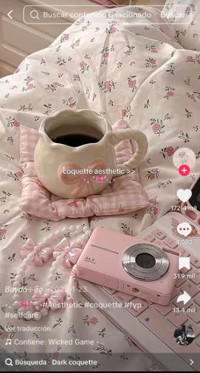
El análisis consideró tanto los elementos visuales de las publicaciones como los conceptos y discursos presentes en ellas. Se observaron aspectos como vestimenta, maquillaje, espacios domésticos, actividades cotidianas, maternidad, relaciones de pareja y formas de representar los roles de género.
Del estilo de vida al personaje
Posteriormente, se incorporaron publicaciones de creadoras de contenido como Roro y Nara Smith, debido a que sus contenidos combinan elementos de estética, vida cotidiana y actividades domésticas. En esta etapa se buscó identificar la presencia de códigos previamente observados en las tendencias analizadas y su relación con representaciones de feminidad, pareja, maternidad y domesticidad. La selección de estas creadoras no implica clasificarlas como tradwives, sino utilizarlas como casos para observar las asociaciones que pueden producirse entre diferentes contenidos dentro de la plataforma.
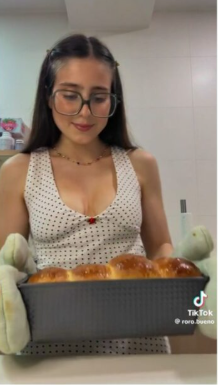
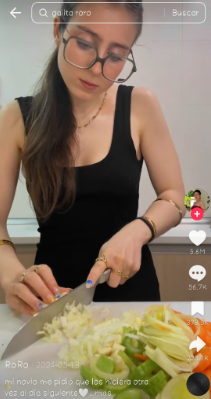
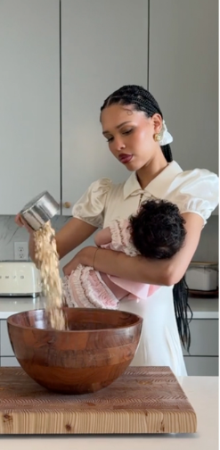
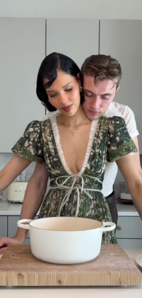
Cuando aparece el discurso político
Finalmente, se analizaron publicaciones de figuras vinculadas directamente con discursos políticos y conservadores, como Erika Kirk. De esta manera, el contenido recopilado se organizó en cuatro categorías principales: estética, estilo de vida, roles tradicionales de género y discurso político. La información obtenida fue comparada para identificar elementos compartidos y posibles conexiones entre las categorías, considerando especialmente la manera en que el sistema de recomendaciones puede relacionar contenidos a partir de sus características visuales y temáticas.
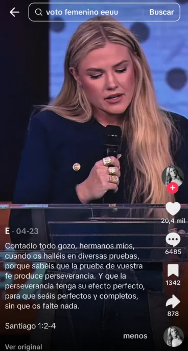
Resultados
Del clean look al discurso político
La organización de los datos permitió identificar una relación entre contenidos que, aunque presentan temáticas diferentes, comparten determinados códigos visuales y discursivos. Las publicaciones analizadas se distribuyeron principalmente entre cuatro categorías: estética, estilo de vida, roles tradicionales de género y discurso político. Esta clasificación permitió visualizar un recorrido en el que los contenidos no aparecen necesariamente como elementos aislados, sino como parte de un mismo ecosistema de circulación.
En el primer nivel se concentraron tendencias como clean look, coquette y old money, caracterizadas por una fuerte construcción visual de la feminidad y por estilos de vida aspiracionales. Al avanzar hacia contenidos de lifestyle, aparecieron con mayor frecuencia representaciones relacionadas con la cocina, el hogar, la pareja y la maternidad. Posteriormente, estos elementos se relacionaron con discursos más explícitos sobre los roles que deberían cumplir hombres y mujeres.
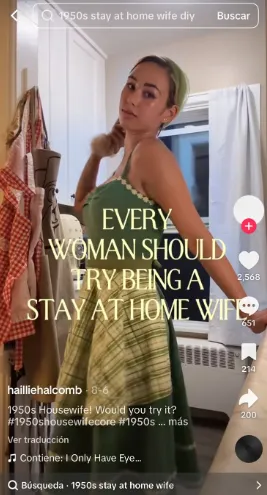
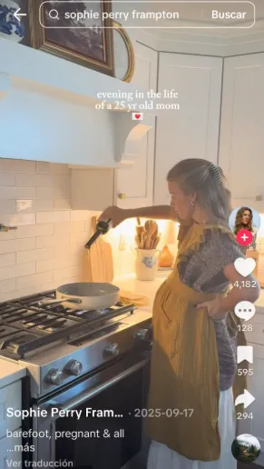
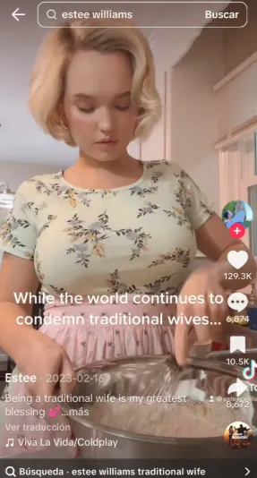
¿Qué conexiones aparecen?
Uno de los principales hallazgos corresponde a la proximidad entre contenidos estéticos y discursos relacionados con valores tradicionales. Los datos muestran que determinados recursos visuales pueden reaparecer en publicaciones con contenidos diferentes, permitiendo establecer asociaciones entre tendencias, creadoras de lifestyle y discursos políticos. En este recorrido, el contenido conservador aparece como una categoría posterior y más explícita, representada por figuras como Erika Kirk.
La visualización de los datos permite representar esta relación como un recorrido entre estética, estilo de vida, roles tradicionales de género y discurso político.
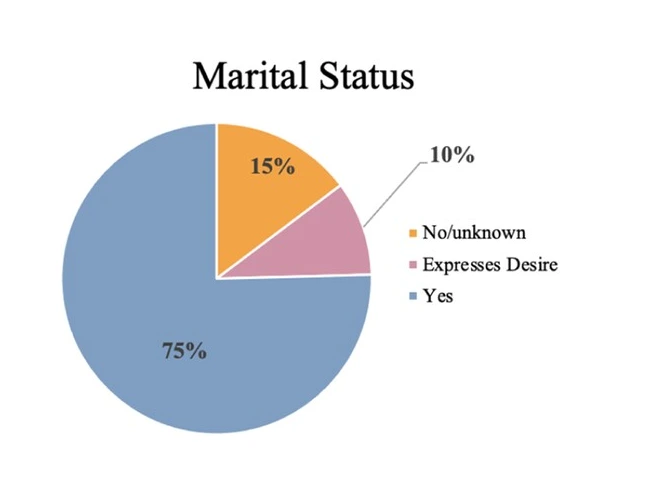
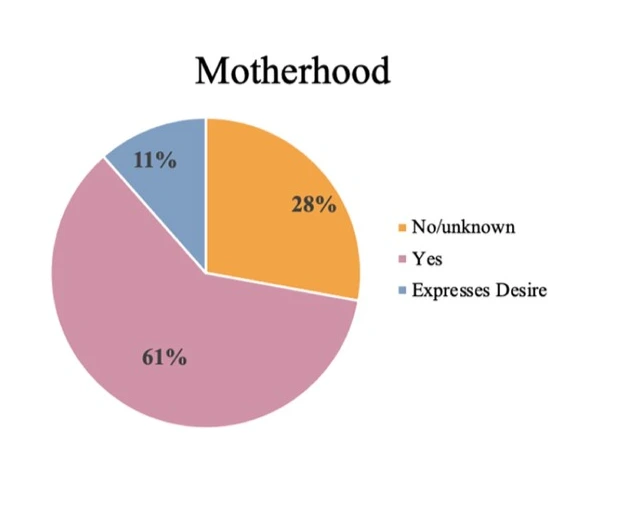
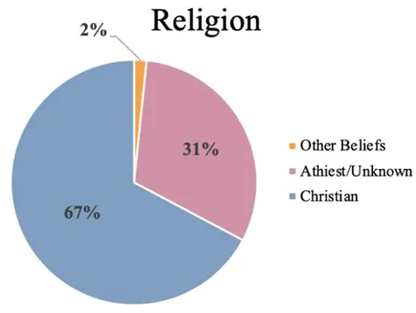
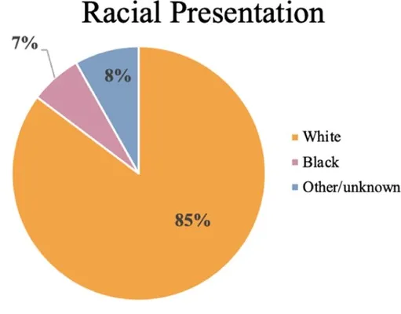
Sin embargo, esta secuencia no significa que el consumo de una tendencia como clean look produzca necesariamente una orientación conservadora. Tampoco permite afirmar que las creadoras analizadas compartan las mismas posiciones políticas.
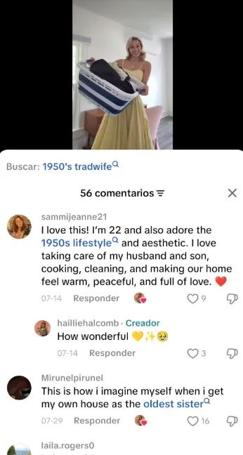
Lo que los resultados permiten evidenciar es que el sistema de recomendaciones puede generar un espacio donde contenidos inicialmente asociados al entretenimiento, la belleza o el estilo de vida aparecen próximos a discursos de carácter ideológico. Así, la repetición y conexión entre publicaciones puede contribuir a que determinadas representaciones de feminidad y relaciones tradicionales adquieran mayor visibilidad dentro del entorno digital.
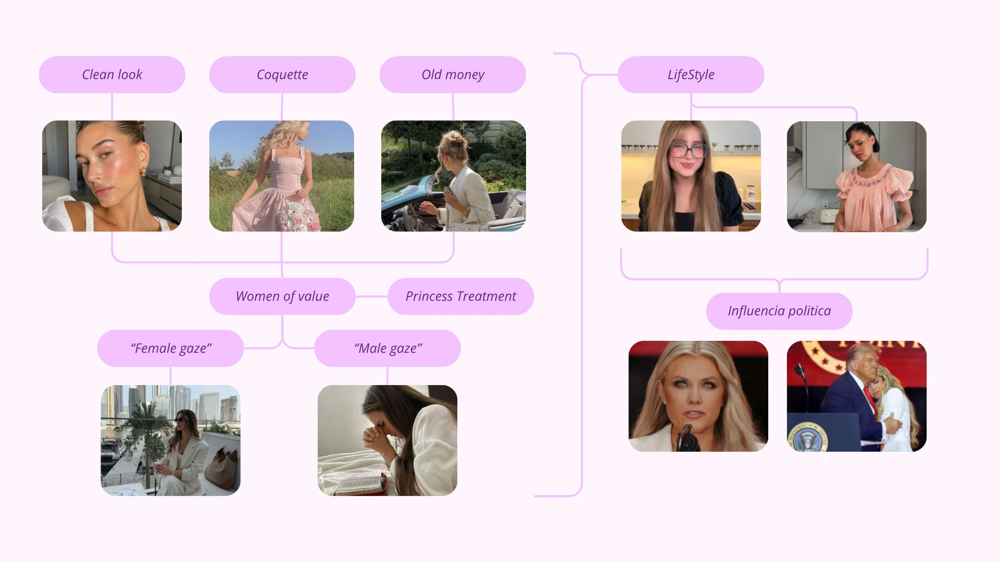
Conclusión
Más allá de una estética
El análisis del fenómeno tradwife permite comprender que su presencia en redes sociales no puede reducirse únicamente a una tendencia estética o a una representación de la vida doméstica. Los contenidos analizados muestran que elementos asociados al cuidado personal, la belleza, la vestimenta y los estilos de vida aspiracionales pueden coexistir con representaciones de la maternidad, las relaciones de pareja y los roles tradicionales de género. Esta conexión permite que determinadas ideas circulen inicialmente como contenidos cotidianos o de entretenimiento, antes de adquirir dimensiones ideológicas más explícitas.
Cuando la información no es neutral
En este contexto, el algoritmo adquiere relevancia al participar en la organización y circulación de los contenidos que los usuarios encuentran en la plataforma. A partir de datos derivados de las interacciones, los sistemas de recomendación pueden establecer proximidades entre publicaciones que comparten características visuales o temáticas. Esto no significa que consumir una tendencia como clean look conduzca necesariamente hacia una posición conservadora, sino que diferentes contenidos pueden encontrarse dentro de un mismo ecosistema de información.
El fenómeno tradwife evidencia así la relación entre estética, ideología y circulación digital. La presentación de determinados roles de género como estilos de vida aspiracionales puede contribuir a normalizar representaciones tradicionales, especialmente cuando estas coexisten con discursos conservadores explícitos.
Desde la perspectiva del estudio de la información, este caso demuestra que los datos no hablan por sí mismos: son seleccionados, organizados y distribuidos mediante sistemas que determinan qué contenidos adquieren visibilidad. Por ello, comprender el fenómeno implica preguntarse qué se muestra, cómo se conecta y qué ideas pueden llegar a parecer cotidianas a partir de su circulación en las plataformas digitales.
Referencias bibliográficas
- Baker, A., Chakraborty, D., & McAdams, A. C. (2025). Revisiting the information hierarchy in the AI era: Implications of misinformation, ignorance, and imprudence. Communications of the Association for Information Systems, 57(1), 102–132. https://doi.org/10.17705/1cais.05705
- Castelló-Martínez, A. (2026). Tradwives on social networks: Ideology and advertising. The case of RoRo on Instagram. Comunicación y Sociedad, 1–24. https://doi.org/10.32870/cys.v2026.9086
- D'Ignazio, C., & Klein, L. F. (2020). Data feminism. The MIT Press. https://doi.org/10.7551/mitpress/11805.001.0001
- Rempel, C., & Hannan, J. (2026). Making submission sexy again: The reactionary rhetoric of the tradwife movement. Women's Studies in Communication, 1–20. https://doi.org/10.1080/07491409.2026.2667234
- Sykes, S., & Hopner, V. (2024). TradWives: Right-wing social media influencers. Journal of Contemporary Ethnography, 53(4), 453–487. https://doi.org/10.1177/08912416241246273